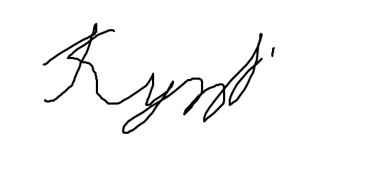

Привіт, я Роман. Я цікавлюся різноманітними аспектами життя і завжди в пошуках нових можливостей для самовдосконалення. Люблю подорожувати та вивчати нові культури.
Настільний теніс: Займаюся настільним тенісом з шести років дуже подобається цей вид спорта. Моя ціль: здобути звання кандидат в майстера спорту України
Знаю базу таких мов програмування: Python, Java, JavaScript. Хочу більше розвиватися з мовою Python, хочу навчитися создавати найромережі і телеграм боти.
Студент групи 102-ТК Кутейко Р.О.
Завдання 2